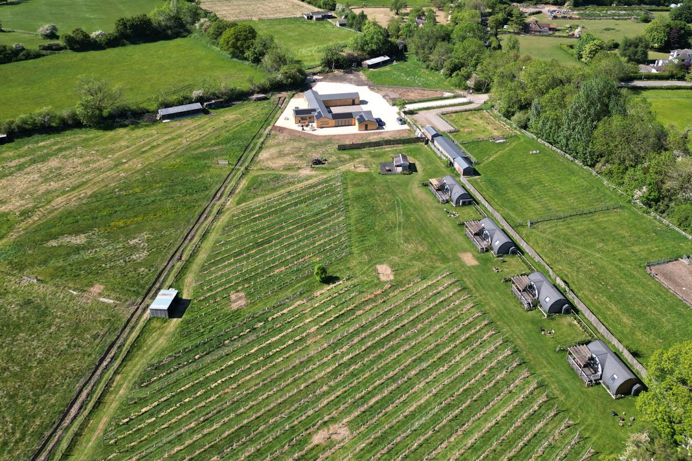

Nottinghamshire · Midlands
Wolds Wine Estate
Estate-verified · November 2026
A Nottinghamshire wine estate with Saturday tours from May to mid-October, a café open all year, and four glamping pods among the vines.

The visit
Wolds’ café keeps the same hours all winter; Saturday tours return in May.
Public tours
Every Saturday at 11am and 2pm, from May to mid-October. An extra Friday lunchtime session may be added.
The café
Wednesday to Friday 9am to 3pm, and weekends 9am to 4pm, all through the winter.
Glamping pods
Four pods: two with two bedrooms and two with one. Children are welcome, but no pets.
Take the Keyworth Connection bus to the Willow Brook stop, or book Notts Bus On-Demand, which stops at the vineyard.
Common questions
When are Wolds Wine Estate’s tours?
Every Saturday at 11am and 2pm, from May to mid-October.
Is the Wolds Wine Estate café open in winter?
Yes, Wednesday to Friday 9am to 3pm and weekends 9am to 4pm.
Can you stay at Wolds Wine Estate?
Yes, in one of four glamping pods. Children are welcome, but not pets.
At a glance
- Region
- The Midlands
- Where
- Thurlby Lane, Stanton-on-the-Wolds
- Tours
- Sat 11am & 2pm, May–mid Oct
- Café
- Wed–Fri 9–3; weekends 9–4
- Stay
- Four glamping pods
- Pets
- Not in the pods
- By bus
- Willow Brook stop; Notts Bus On-Demand
Also in The Midlands
- Hanwell Wine Estate Hickling Pastures, near Melton Mowbray
- Pattingham Vineyard Pattingham
- Veenow Waters Upton, near Telford